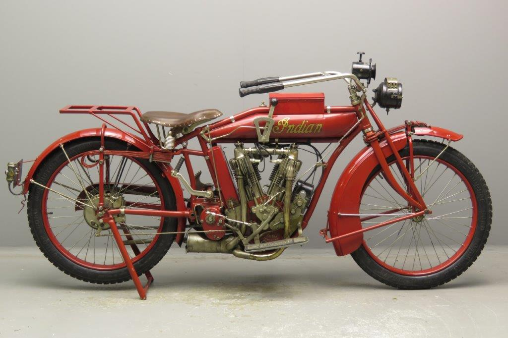
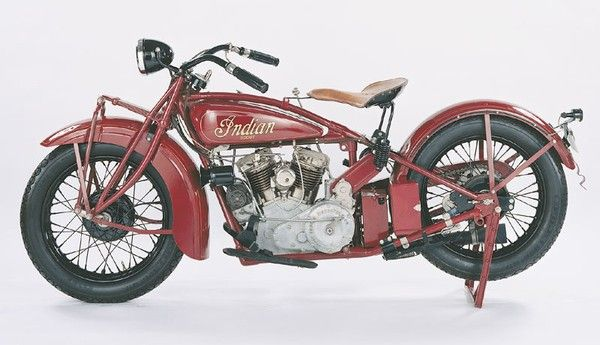

Why 1910s to 1930s motorcycles?
The creation of the motorcycle from the 1910s to the 1930s was a transformative period that significantly influenced transportation, industry, and culture. During this era, motorcycles evolved from basic motorized bicycles into more reliable, affordable, and faster machines, making personal mobility accessible to a broader segment of society. They provided an efficient alternative to horses and early automobiles, especially in rural and developing areas, and became vital for military use during World War I. The motorcycle also spurred advancements in engineering and manufacturing techniques and fostered a growing culture of freedom, adventure, and individualism that continues to shape social attitudes today. Overall, this period laid the foundation for motorcycles as both practical vehicles and cultural icons.
 